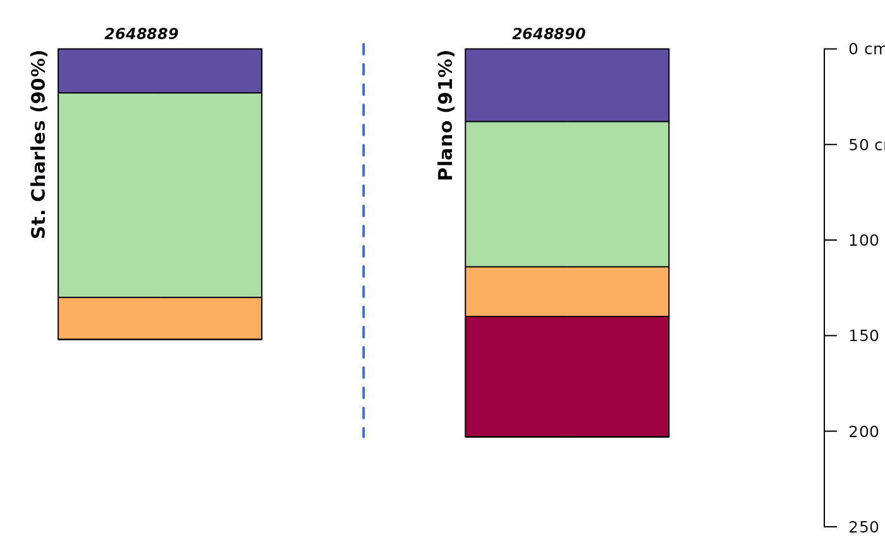

Format vector of values into a string suitable for an SQL IN statement.
Source: R/SDA_query.R
format_SQL_in_statement.RdConcatenate a vector to SQL IN-compatible syntax: letters[1:3] becomes ('a','b','c'). Values in x are first passed through unique().
Value
A character vector (unit length) containing concatenated group syntax for use in SQL IN, with unique value found in x.
Examples
# \donttest{
library(aqp)
# get some mukeys
q <- "select top(2) mukey from mapunit;"
mukeys <- SDA_query(q)
#> single result set, returning a data.frame
# format for use in an SQL IN statement
mukey.inst <- format_SQL_in_statement(mukeys$mukey)
mukey.inst
#> [1] "('2648889','2648890')"
# make a more specific query: for component+horizon data, just for those mukeys
q2 <- sprintf("SELECT * FROM mapunit
INNER JOIN component ON mapunit.mukey = component.mukey
INNER JOIN chorizon ON component.cokey = chorizon.cokey
WHERE mapunit.mukey IN %s;", mukey.inst)
# do the query
res <- SDA_query(q2)
#> single result set, returning a data.frame
# build a SoilProfileCollection from horizon-level records
depths(res) <- cokey ~ hzdept_r + hzdepb_r
#> converting profile IDs from integer to character
# normalize mapunit/component level attributes to site-level for plot
site(res) <- ~ muname + mukey + compname + comppct_r + taxclname
# make a nice label
res$labelname <- sprintf("%s (%s%s)", res$compname, res$comppct_r, "%")
# major components only
res <- subset(res, comppct_r >= 85)
if (requireNamespace("scales")) {
# inspect plot of result
par(mar=c(0,0,0,0))
groupedProfilePlot(res, groups = "mukey", color = "hzname", cex.names=0.8,
id.style = "side", label = "labelname")
}

# }